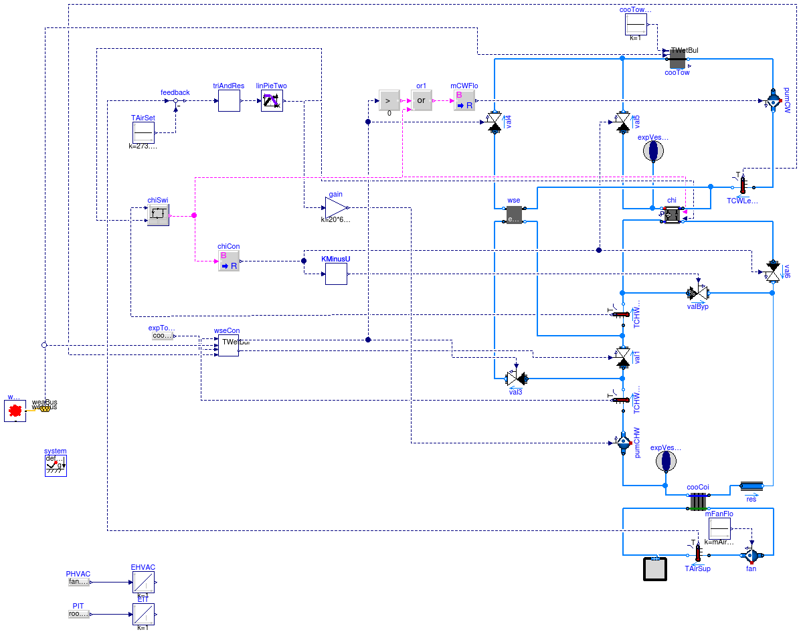
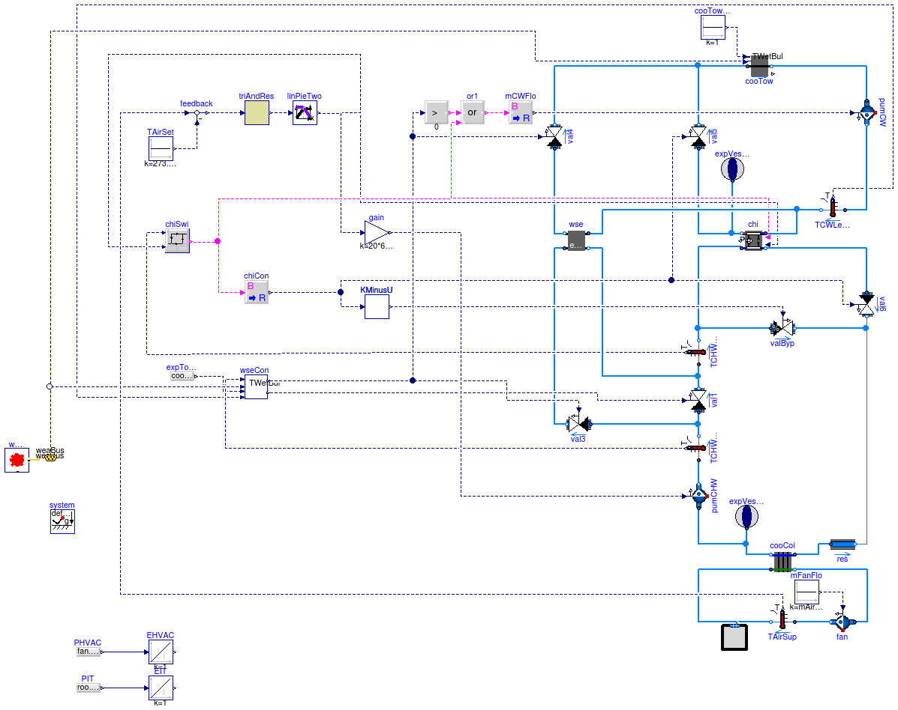

This example demonstrates the implementation of a chiller plant with water-side economizer (WSE) to cool a data center. The system schematics is as shown below.

The system is a primary-only chiller plant with integrated WSE. The objective was to improve the energy efficiency of the chilled water plant by optimizing the control setpoints. The room of the data center was modeled using a mixed air volume with a heat source. Heat conduction and air infiltration through the building envelope were neglected since the heat exchange between the room and the ambient environment was small compared to the heat released by the computers.
The control objective was to maintain the temperature of the supply air to the room, while reducing energy consumption of the chilled water plant. The control was based on the control sequence proposed by Stein (2009). To simplify the implementation, we only applied the controls for the differential pressure of the chilled water loop, the setpoint temperature of the chilled water leaving the chiller, and the chiller and WSE on/off control.
The WSE is enabled when
The WSE is disabled when
The control strategy is as follows:
The setpoint reset strategy is to first increase the different pressure, Δp, of the chilled water loop to increase the mass flow rate. If Δp reaches the maximum value and further cooling is still needed, the chiller remperature setpoint, Tchi,set, is reduced. If there is too much cooling, the Tchi,set and Δp will be changed in the reverse direction.
There are two implementations for the setpoint reset.
The model Buildings.Examples.ChillerPlant.DataCenterDiscreteTimeControl implements a discrete time trim and response logic as follows:
The model Buildings.Examples.ChillerPlant.DataCenterContinuousTimeControl uses a PI-controller to approximate the above trim and response logic. This significantly reduces computing time.
For both models, the control signal u is converted to setpoints for Δp and Tchi,set as follows:
Stein, J. (2009). Waterside Economizing in Data Centers: Design and Control Considerations. ASHRAE Transactions, 115(2), 192-200.
Taylor, S.T. (2007). Increasing Efficiency with VAV System Static Pressure Setpoint Reset. ASHRAE Journal, June, 24-32.
Extends from Modelica.Icons.ExamplesPackage (Icon for packages containing runnable examples).
| Name | Description |
|---|---|
| Model of data center that approximates the trim and response logic | |
| Primary only chiller plant system with water-side economizer | |
| Package with base classes for Buildings.Examples.ChillerPlant |
 Buildings.Examples.ChillerPlant.DataCenterContinuousTimeControl
Buildings.Examples.ChillerPlant.DataCenterContinuousTimeControl
This model is the chilled water plant with continuous time control. The trim and response logic is approximated by a PI controller which significantly reduces computing time. The model is described at Buildings.Examples.ChillerPlant.
Extends from Buildings.Examples.ChillerPlant.DataCenterDiscreteTimeControl (Primary only chiller plant system with water-side economizer).
| Type | Name | Default | Description |
|---|---|---|---|
| MassFlowRate | mAir_flow_nominal | roo.QRoo_flow/(1005*15) | Nominal mass flow rate at fan [kg/s] |
| Power | P_nominal | 80E3 | Nominal compressor power (at y=1) [W] |
| TemperatureDifference | dTEva_nominal | 10 | Temperature difference evaporator inlet-outlet [K] |
| TemperatureDifference | dTCon_nominal | 10 | Temperature difference condenser outlet-inlet [K] |
| Real | COPc_nominal | 3 | Chiller COP |
| MassFlowRate | mCHW_flow_nominal | 2*roo.QRoo_flow/(4200*20) | Nominal mass flow rate at chilled water [kg/s] |
| MassFlowRate | mCW_flow_nominal | 2*roo.QRoo_flow/(4200*6) | Nominal mass flow rate at condenser water [kg/s] |
| Pressure | dp_nominal | 500 | Nominal pressure difference [Pa] |
| Type | Name | Description |
|---|---|---|
| Bus | weaBus |
model DataCenterContinuousTimeControl
"Model of data center that approximates the trim and response logic"
extends Buildings.Examples.ChillerPlant.DataCenterDiscreteTimeControl(redeclare BaseClasses.Controls.TrimAndRespondContinuousTimeApproximation
triAndRes);
end DataCenterContinuousTimeControl;
Buildings.Examples.ChillerPlant.DataCenterDiscreteTimeControl
This model is the chilled water plant with discrete time control and trim and response logic for a data center. The model is described at Buildings.Examples.ChillerPlant.
Extends from Modelica.Icons.Example (Icon for runnable examples).
| Type | Name | Default | Description |
|---|---|---|---|
| MassFlowRate | mAir_flow_nominal | roo.QRoo_flow/(1005*15) | Nominal mass flow rate at fan [kg/s] |
| Power | P_nominal | 80E3 | Nominal compressor power (at y=1) [W] |
| TemperatureDifference | dTEva_nominal | 10 | Temperature difference evaporator inlet-outlet [K] |
| TemperatureDifference | dTCon_nominal | 10 | Temperature difference condenser outlet-inlet [K] |
| Real | COPc_nominal | 3 | Chiller COP |
| MassFlowRate | mCHW_flow_nominal | 2*roo.QRoo_flow/(4200*20) | Nominal mass flow rate at chilled water [kg/s] |
| MassFlowRate | mCW_flow_nominal | 2*roo.QRoo_flow/(4200*6) | Nominal mass flow rate at condenser water [kg/s] |
| Pressure | dp_nominal | 500 | Nominal pressure difference [Pa] |
| TrimAndRespond | triAndRes | redeclare Buildings.Examples... | Trim and respond logic |
| Type | Name | Description |
|---|---|---|
| Bus | weaBus |
model DataCenterDiscreteTimeControl
"Primary only chiller plant system with water-side economizer"
extends Modelica.Icons.Example;
package MediumAir = Buildings.Media.GasesPTDecoupled.SimpleAir "Medium model";
package MediumCHW = Buildings.Media.ConstantPropertyLiquidWater
"Medium model";
package MediumCW = Buildings.Media.ConstantPropertyLiquidWater "Medium model";
parameter Modelica.SIunits.MassFlowRate mAir_flow_nominal=roo.QRoo_flow/(1005
*15) "Nominal mass flow rate at fan";
parameter Modelica.SIunits.Power P_nominal=80E3
"Nominal compressor power (at y=1)";
parameter Modelica.SIunits.TemperatureDifference dTEva_nominal=10
"Temperature difference evaporator inlet-outlet";
parameter Modelica.SIunits.TemperatureDifference dTCon_nominal=10
"Temperature difference condenser outlet-inlet";
parameter Real COPc_nominal=3 "Chiller COP";
parameter Modelica.SIunits.MassFlowRate mCHW_flow_nominal=2*roo.QRoo_flow/(
4200*20) "Nominal mass flow rate at chilled water";
parameter Modelica.SIunits.MassFlowRate mCW_flow_nominal=2*roo.QRoo_flow/(
4200*6) "Nominal mass flow rate at condenser water";
parameter Modelica.SIunits.Pressure dp_nominal=500
"Nominal pressure difference";
Buildings.Fluid.Movers.FlowMachine_m_flow fan(
redeclare package Medium = MediumAir,
m_flow_nominal=mAir_flow_nominal,
dp(start=249),
m_flow(start=mAir_flow_nominal),
T_start=293.15,
filteredSpeed=false);
Buildings.Fluid.HeatExchangers.DryCoilCounterFlow cooCoi(
redeclare package Medium1 = MediumCHW,
redeclare package Medium2 = MediumAir,
m2_flow_nominal=mAir_flow_nominal,
m1_flow_nominal=mCHW_flow_nominal,
m1_flow(start=mCHW_flow_nominal),
m2_flow(start=mAir_flow_nominal),
dp1_nominal(displayUnit="Pa") = 1000,
dp2_nominal=249*3,
UA_nominal=mAir_flow_nominal*1006*5) "Cooling coil";
Modelica.Blocks.Sources.Constant mFanFlo(k=mAir_flow_nominal)
"Mass flow rate of fan";
BaseClasses.SimplifiedRoom roo(
redeclare package Medium = MediumAir,
nPorts=2,
rooLen=50,
rooWid=30,
rooHei=3,
m_flow_nominal=mAir_flow_nominal,
QRoo_flow=500000) "Room model";
inner Modelica.Fluid.System system(T_ambient=283.15);
Fluid.Movers.FlowMachine_dp pumCHW(
redeclare package Medium = MediumCHW,
m_flow_nominal=mCHW_flow_nominal,
m_flow(start=mCHW_flow_nominal),
dp(start=325474),
filteredSpeed=false) "Chilled water pump";
Buildings.Fluid.Storage.ExpansionVessel expVesCHW(redeclare package Medium =
MediumCHW, VTot=1) "Expansion vessel";
Buildings.Fluid.HeatExchangers.CoolingTowers.YorkCalc cooTow(
redeclare package Medium = MediumCW,
m_flow_nominal=mCW_flow_nominal,
PFan_nominal=6000,
TAirInWB_nominal(displayUnit="degC") = 283.15,
TApp_nominal=6,
dp_nominal=14930 + 14930 + 74650) "Cooling tower";
Buildings.Fluid.Movers.FlowMachine_m_flow pumCW(
redeclare package Medium = MediumCW,
m_flow_nominal=mCW_flow_nominal,
dp(start=214992),
filteredSpeed=false) "Condenser water pump";
Buildings.Fluid.HeatExchangers.ConstantEffectiveness wse(
redeclare package Medium1 = MediumCW,
redeclare package Medium2 = MediumCHW,
m1_flow_nominal=mCW_flow_nominal,
m2_flow_nominal=mCHW_flow_nominal,
eps=0.8,
dp2_nominal=0,
dp1_nominal=0) "Water side economizer (Heat exchanger)";
Fluid.Actuators.Valves.TwoWayLinear val5(
redeclare package Medium = MediumCW,
m_flow_nominal=mCW_flow_nominal,
dpValve_nominal=20902,
dpFixed_nominal=89580,
y_start=1,
filteredOpening=false) "Control valve for condenser water loop of chiller";
Fluid.Actuators.Valves.TwoWayLinear val1(
redeclare package Medium = MediumCHW,
m_flow_nominal=mCHW_flow_nominal,
dpValve_nominal=20902,
filteredOpening=false)
"Bypass control valve for economizer. 1: disable economizer, 0: enable economoizer";
Buildings.Fluid.Storage.ExpansionVessel expVesChi(redeclare package Medium =
MediumCW, VTot=1);
Buildings.Examples.ChillerPlant.BaseClasses.Controls.WSEControl wseCon;
Modelica.Blocks.Sources.RealExpression expTowTApp(y=cooTow.TApp_nominal)
"Cooling tower approach";
Fluid.Chillers.ElectricEIR chi(
redeclare package Medium1 = MediumCW,
redeclare package Medium2 = MediumCHW,
m1_flow_nominal=mCW_flow_nominal,
m2_flow_nominal=mCHW_flow_nominal,
dp2_nominal=0,
dp1_nominal=0,
per=Buildings.Fluid.Chillers.Data.ElectricEIR.ElectricEIRChiller_Carrier_19XR_742kW_5_42COP_VSD());
Fluid.Actuators.Valves.TwoWayLinear val6(
redeclare package Medium = MediumCHW,
m_flow_nominal=mCHW_flow_nominal,
dpValve_nominal=20902,
dpFixed_nominal=14930 + 89580,
y_start=1,
filteredOpening=false)
"Control valve for chilled water leaving from chiller";
Buildings.Examples.ChillerPlant.BaseClasses.Controls.ChillerSwitch chiSwi(
deaBan(displayUnit="K") = 2.2)
"Control unit switching chiller on or off ";
replaceable Buildings.Examples.ChillerPlant.BaseClasses.Controls.TrimAndRespond
triAndRes(
yEqu0=0,
samplePeriod=120,
uTri=0,
yDec=-0.03,
yInc=0.03) constrainedby Modelica.Blocks.Interfaces.BlockIcon
"Trim and respond logic";
Buildings.Examples.ChillerPlant.BaseClasses.Controls.LinearPiecewiseTwo
linPieTwo(
x0=0,
x2=1,
x1=0.5,
y11=1,
y21=273.15 + 5.56,
y10=0.2,
y20=273.15 + 22) "Translate the control signal for chiller setpoint reset";
Modelica.Blocks.Sources.Constant TAirSet(k=273.15 + 27)
"Set temperature for air supply to the room";
Modelica.Blocks.Math.BooleanToReal chiCon "Contorl signal for chiller";
Fluid.Actuators.Valves.TwoWayLinear val4(
redeclare package Medium = MediumCW,
m_flow_nominal=mCW_flow_nominal,
dpValve_nominal=20902,
dpFixed_nominal=59720,
y_start=0,
filteredOpening=false)
"Control valve for condenser water loop of economizer";
Buildings.Fluid.Sensors.TemperatureTwoPort TAirSup(redeclare package Medium
= MediumAir, m_flow_nominal=mAir_flow_nominal)
"Supply air temperature to data center";
Buildings.Fluid.Sensors.TemperatureTwoPort TCHWEntChi(redeclare package
Medium = MediumCHW, m_flow_nominal=mCHW_flow_nominal)
"Temperature of chilled water entering chiller";
Buildings.Fluid.Sensors.TemperatureTwoPort TCWLeaTow(redeclare package Medium
= MediumCW, m_flow_nominal=mCW_flow_nominal)
"Temperature of condenser water leaving the cooling tower";
Modelica.Blocks.Sources.Constant cooTowFanCon(k=1)
"Control singal for cooling tower fan";
Fluid.Actuators.Valves.TwoWayEqualPercentage valByp(
redeclare package Medium = MediumCHW,
m_flow_nominal=mCHW_flow_nominal,
dpValve_nominal=20902,
dpFixed_nominal=14930,
y_start=0,
filteredOpening=false) "Bypass valve for chiller.";
Buildings.Examples.ChillerPlant.BaseClasses.Controls.KMinusU KMinusU(k=1);
Fluid.Actuators.Valves.TwoWayLinear val3(
redeclare package Medium = MediumCHW,
m_flow_nominal=mCHW_flow_nominal,
dpValve_nominal=20902,
dpFixed_nominal=59720 + 1000,
filteredOpening=false)
"Control valve for economizer. 0: disable economizer, 1: enable economoizer";
Buildings.Fluid.Sensors.TemperatureTwoPort TCHWLeaCoi(redeclare package
Medium = MediumCHW, m_flow_nominal=mCHW_flow_nominal)
"Temperature of chilled water leaving the cooling coil";
Buildings.BoundaryConditions.WeatherData.ReaderTMY3 weaData(filNam=
"Resources/weatherdata/USA_CA_San.Francisco.Intl.AP.724940_TMY3.mos");
BoundaryConditions.WeatherData.Bus weaBus;
Fluid.FixedResistances.FixedResistanceDpM res(
redeclare package Medium = MediumCHW,
m_flow_nominal=mCHW_flow_nominal,
dp_nominal=89580);
Modelica.Blocks.Math.Gain gain(k=20*6485);
Modelica.Blocks.Math.Feedback feedback;
Modelica.Blocks.Logical.GreaterThreshold greaterThreshold;
Modelica.Blocks.Logical.Or or1;
Modelica.Blocks.Math.BooleanToReal mCWFlo(realTrue=mCW_flow_nominal)
"Mass flow rate of condensor loop";
Modelica.Blocks.Sources.RealExpression PHVAC(y=fan.P + pumCHW.P + pumCW.P +
cooTow.PFan + chi.P) "Power consumed by HVAC system";
Modelica.Blocks.Sources.RealExpression PIT(y=roo.QSou.Q_flow)
"Power consumed by IT";
Modelica.Blocks.Continuous.Integrator EHVAC(initType=Modelica.Blocks.Types.Init.InitialState,
y_start=0) "Energy consumed by HVAC";
Modelica.Blocks.Continuous.Integrator EIT(initType=Modelica.Blocks.Types.Init.InitialState,
y_start=0) "Energy consumed by IT";
equation
connect(expVesCHW.port_a, cooCoi.port_b1);
connect(expTowTApp.y, wseCon.towTApp);
connect(chiSwi.y, chiCon.u);
connect(cooTow.port_b, pumCW.port_a);
connect(val5.port_a, chi.port_b1);
connect(expVesChi.port_a, chi.port_b1);
connect(val4.port_a, wse.port_b1);
connect(chiSwi.y, chi.on);
connect(linPieTwo.y[2], chi.TSet);
connect(chiCon.y, val5.y);
connect(linPieTwo.y[2], chiSwi.TSet);
connect(cooTowFanCon.y, cooTow.y);
connect(cooCoi.port_b2, fan.port_a);
connect(mFanFlo.y, fan.m_flow_in);
connect(wse.port_a2, val3.port_b);
connect(wseCon.y2, val1.y);
connect(wseCon.y1, val3.y);
connect(wseCon.y1, val4.y);
connect(TAirSup.port_a, fan.port_b);
connect(roo.airPorts[1],TAirSup. port_b);
connect(roo.airPorts[2], cooCoi.port_a2);
connect(TCHWLeaCoi.port_a, pumCHW.port_b);
connect(TCHWEntChi.port_b, valByp.port_a);
connect(TCHWEntChi.port_a, val1.port_b);
connect(val1.port_a, TCHWLeaCoi.port_b);
connect(val3.port_a, TCHWLeaCoi.port_b);
connect(TCWLeaTow.port_b, chi.port_a1);
connect(TCWLeaTow.port_b, wse.port_a1);
connect(TCHWEntChi.T, chiSwi.chiCHWST);
connect(wseCon.wseCWST, TCWLeaTow.T);
connect(wseCon.wseCHWST, TCHWLeaCoi.T);
connect(weaData.weaBus, weaBus);
connect(wseCon.TWetBul, weaBus.TWetBul);
connect(cooTow.TAir, weaBus.TWetBul);
connect(TCHWEntChi.port_a, wse.port_b2);
connect(valByp.port_b, val6.port_b);
connect(TCHWEntChi.port_b, chi.port_a2);
connect(val5.port_b, cooTow.port_a);
connect(val4.port_b, cooTow.port_a);
connect(pumCW.port_b, TCWLeaTow.port_a);
connect(cooCoi.port_a1, res.port_a);
connect(chiCon.y, KMinusU.u);
connect(KMinusU.y, valByp.y);
connect(chiCon.y, val6.y);
connect(linPieTwo.y[1], gain.u);
connect(gain.y, pumCHW.dp_in);
connect(triAndRes.y, linPieTwo.u);
connect(TAirSet.y, feedback.u2);
connect(TAirSup.T, feedback.u1);
connect(chi.port_b2, val6.port_a);
connect(res.port_b, val6.port_b);
connect(pumCHW.port_a, cooCoi.port_b1);
connect(feedback.y, triAndRes.u);
connect(greaterThreshold.u, wseCon.y1);
connect(or1.u1, greaterThreshold.y);
connect(or1.u2, chiSwi.y);
connect(or1.y, mCWFlo.u);
connect(mCWFlo.y, pumCW.m_flow_in);
connect(PHVAC.y, EHVAC.u);
connect(PIT.y, EIT.u);
end DataCenterDiscreteTimeControl;